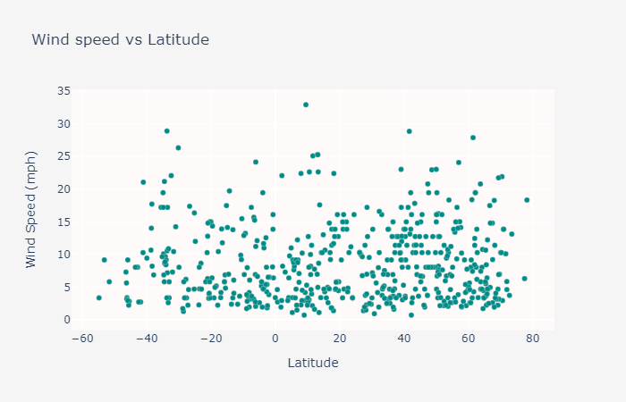

Wind Speed (mph)

Similar to the cloudiness and humidity data, no significant patterns can be observed for wind speed and distance from the equator. This finding is as expected because the deflection patterns of air due to the differences in the speed of Earth's rotation experienced along different latitudes determines the direction of wind travel and not the speed.
Credit: National Geographic Society, 27 Sept. 2022.